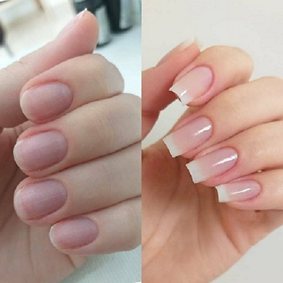
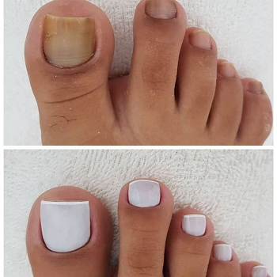
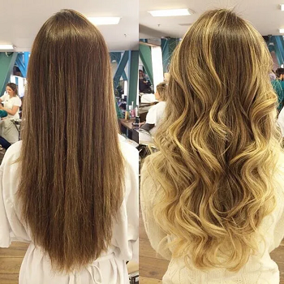

Bem vindo a Ledidi Coiffeur!
Somos uma empresa de restauração e tratamento estético com mais de 5 anos no mercado e 3 filiais espalhadas por São Gonçalo. Nos especializamos em serviços de manicure, pedicure e demartologista, com isso, já transformamos centenas de vidas de homens e mulheres com nossas técnicas e equipamentos modernos, nos adaptando a cada pedido que atendemos e clientes que nos satisfazemos.
Veja alguns dos nossos melhores trabalhos!
-

A cliente Vânia estava buscando um serviço especial para seu 10º aniversário de casamento e queria algo simples, mas bem cuidado e principalmente com muita resistência. Com isso em mente, fizemos um alongamento mediano de sua unhas com gel reforçado, tratamento das cutículas e aplicação do esmalte transparente do tom adequado com seu tom de pele, satisfação completa!
-

Nossa cliente nos veio com um pedido de socorro, pois estava a muito tempo na correria de trabalho, cuidar dos filhos, cuidar da casa e acabou se esquecendo de cuidar de si mesma! Colocamos nossas mãos a obra e fizemos uma revitalização e fortificação completa das suas unhas pododáctilas, colocando seu esmalte favorito para arrasar desde a rasteirinha até o salto alto!
-

Essa cliente nos solicitou uma repaginação de seu cabelo para poder se destacar em sua virada do ano, e por sorte nosso cabeleireiro Renato havia acabado de finalizar um curso da mistura de luzes com ondulações e pode aplicar todo esse conhecimento acumulado. Nos levou perto de 5 horas para finalizar esse serviço completo, mas temos certeza que valeu cada segundo, tanto para nós quanto para ela!